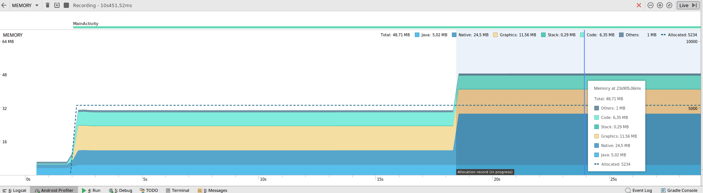

Nous portons de l’importance à l’efficience de vos applications, c’est pourquoi nous vous présentons cet *Ultimate Metric Guide: le glossaire pour mieux gérer la mémoire de vos applications sur appareils Android.**
Syllabus de la mémoire
Pages: Blocs utilisés pour récupérer des données du disque à la mémoire. C’est la partie principale de la gestion de mémoire virtuelle. En général, la taille de la page est de 4kb.
Mémoire privée / partagée (Private / Shared memory): La mémoire privée est composée de pages qui sont utilisées par le processus seulement. La mémoire partagée, quant à elle, est faite de pages utilisées par d’autres processus. Il est possible qu’une page passe de Privée à Partagée si un processus référence la page en question.
Clean / Dirty memory: Les pages “dirty” sont celles sorties du disque. Par conséquence, les pages “clean” sont celles qui ont été lues.
VSS (Virtual Set Size): C’est le nombre total de pages accessibles par un processus. Cela inclut à la fois les pages privées et partagées, mais aussi d’autres espaces de mémoire comme malloc. Cela est peu, voir pas, utilisé.
RSS (Resident Set Size): Total des bibliothèques partagées. Pas d’information sur le nombre de processus utilisant la page. Par conséquent, cela n’est pas une information très utile (La PSS est plus importants).
Pss (proportional set size): Le nombre de pages un processus a en mémoire, dans lequel les pages privées et pages partagées sont additionnées et divisées par le nombre de processus les partageant. Si un processus a 2 pages privées et 6 autres pages privées utilisées par 2 autres processus, le « pss » en nombre de pages est de 2+6/3=4.
Uss (Unique set size): Le nombre de pages uniques associées à un processus, et donc de pages privées ! Généralement VSS > RSS > PSS > USS
Java / native memory: La mémoire Java est la mémoire gérée par le système Android (Dalvik ou ART). Principalement pour vos objets Kotlin ou Java ! La mémoire native est quant à elle plutôt pour les objets générés. Même sans application C/C++, le framework Android utilise parfois la méthode native.
ZRam: Android n’a pas de partition swap, Zram est la RAM mais une compression est utilisée pour stocker les données inutiles. Sur meminfo, « swapped dirty » paraît être équivalent.
Stack / heap: Heap est l’espace mémoire objet, et les variables locales sont allouées à Stack. Par conséquent, les objets sont créés sur Heap. Chaque thread a un espace Stack.
Allocated Heap Size : Android est un système multitâche ; afin de garder de l’espace mémoire pour d’autres processus, il affecte une taille de la mémoire dans la mémoire globale. Cette taille varie selon le smartphone. Si votre application requiert davantage de mémoire, vous obtiendrez la célèbre erreur « mémoire insuffisante » (« out of memory »).
MMAP: Dénommé “map file to memory” par le système. Sur Android, il y des mmap pour chaque type de dossier (Dex, APK, ART. Peut être nommé “Code” dans certains outils.
Graphics Buffer: Mémoire utilisée pour stocker les objets graphiques.
User/Kernal memory: Le processus tourne dans l’espace utilisateur. L’espace Kernel est dédié aux calls du système Android.
Organisation mémoire
La mémoire Android est organisée par un système d’adresses virtuelles. Le mapping est le suivant: (adresses ascendantes)
- User Space
- Data space (texte, données, instructions…)
- Heap
- libs (bibliothèques partagées, .jar…)
- Stack
- Kernel Space
La mémoire utilisée par votre application se trouve dans le user space (principalement en heap et stack).
Outils
Paramètre système Android: Les données dans l’interface utilisateur Android fournissent deux informations : la consommation maximale et la moyenne d’information (3 heures). La moyenne est relativement compliquée à analyser et la consommation maximale est une première indication intéressante pour l’utilisateur.
Top: Parce que l’on utilise déjà les RSS et VSS, les informations Top ne sont pas particulièrement significatives.

Memory Profiler in Android Studio (>3.0): Uniquement la mémoire privée est mesurée et se divise en différents domaines:
- Native / Java
- Code
- Graphics Buffer

Android Monitor in Android Studio (<3.0): Uniquement la mémoire privée est mesurée . Moins de domaines sont mesurés que dans Android Memory > 3.
Dumpsys: Dumpsys mesure la mémoire PSS (à la fois privée et partagée) mais aussi le SWAP dirty.

Android MemInfo API: La mémoire PSS ets utilisée (privée et partagée)
/proc/meminfo: C’est la mémoire globale de la plateforme, pas d’information sur votre processus.
Quelles métriques doit-on utiliser ?
Mémoire privée/USS: Cette mémoire est dédiée à votre processus. Il est donc intéressant d’analyser précisément l’objet dédié à votre application. Par exemple, si vous tuez votre processus, la mémoire dédiée doit être de zéro, cela vous permet donc de détecter une potentielle fuite de mémoire. Néanmoins, votre application a utilisé des bibliothèques et des codes partagés, par conséquent vous ne verrez pas de mémoire qui pourra être partagée avec d’autre processus.
PSS/Mémoire privée et partagée: C’est plus compliqué d’analyser cette mémoire car elle intègre la mémoire de différents processus (avec un facteur de correction). Cependant, pendant vos mesures, si vous fermez les autres apps en cours d’exécution en arrière-plan, cet impact sera minimisé.
VSS/RSS: Trop de pages de mémoire sont prises en compte dans cette métrique, elle n’est donc pas intéressante à analyser.
Comment tester la mémoire ?
Statique: Vous avez seulement à exécuter votre application et lancer les outils de mémoire. Cela permet d’avoir une vue globale de la consommation en mémoire de votre application. Vous pouvez utiliser cette technique pour réduire la mémoire totale utilisée : code, java heap,…
En longueur: Vous laissez les outils s’exécuter et observez les évolutions en matière de mémoire. Par ce moyen, vous pouvez identifier une fuite de mémoire potentielle ; la mémoire augmente régulièrement : s’il y a un « garbage collector » réduisant fréquemment la mémoire à sa valeur initiale, il n’y a pas de problème, si non, il y a une fuite.
Passer d’une activité à une autre: Vous pouvez aller entre les pages et voir si la mémoire est libérée à chaque fois. Cela est possible avec des tests Monkey.
Ecran rotateur: Si vous tourner votre écran, l’activité de votre application créera potentiellement une fuite de mémoire.
Mettre l’application en arrière-plan: Si votre application est en arrière-plan, une partie de la mémoire sera libérée (par exemple la graphique). Vous pouvez aussi libérer davantage de mémoire (objet, bibliothèque…).
Comment réduire la mémoire?
Optimiser l’image: Les images sont une cause de consommation de mémoire assez importante. Vous pouvez utiliser la Bibliothèque Glide pour vous aider à les gérer ou encore à en optimiser la gestion avec Android API.
Libérer de la mémoire quand Android requiert advantage de mémoire : Comme le système est pauvre en mémoire, une notification est envoyée à toutes les applications pour libérer de la mémoire. Dans ce cas-là, passez outre onTrimMemory() pour libérer de la mémoire.
Utiliser une structure spécifique: Les collections génériques comme hashmap ne sont pas dédiées à Android, certaines structures sont plus adaptées, comme SparseArray.
Réduire la taille de votre APK: La taille de votre APK (particulièrement les ressources et bibliothèques) peuvent augmenter la consommation de mémoire.
Réduire le nombre de threads: Android fournit des services pour faire des petites tâches et éviter la surconsommation de mémoire, comme AsyncTask.
Préférer les classes internes statiques : Les classes internes non-statiques créent des références étrangères à cette activité. C’est une cause de fuite de mémoire. Vous devriez choisir celles statiques.
FAQ
Comment connaître la taille limite du heap?: La taille limite du heap d’Android dépend de l’appareil (de 15Mb à quelques centaines). Afin de connaître la taille limite, vous pouvez utiliser l’API de getMemoryClass() du service ActivityManager.
Les informations de mémoire ne sont pas identiques selon les différents outils. Pourquoi ?: Les outils peuvent utiliser des APIs de différents systèmes ou simplement ne pas prendre en compte les mêmes données (par exemple ne pas prendre le MMAP). Dans la plupart des cas : Android monitor < Android Profiler in Android Studio < dumpsys < System Meminfo api < top info and VSS > RSS > PSS > USS
Android libérera-t-il la mémoire de processus pendant le mode arrière-plan ?: Quand l’utilisateur change l’app, le système « cache » l’app dans le cache utilisé le moins récemment (LRU – least recently used cache). Le système fonctionnant avec peu de mémoire, il va tuez (kill) les applications consommatrices. Si votre app consomme peu de mémoire, elle a ses chances de ne pas être tuée (ou du moins, seulement après les apps consommant davantage).
Est-il possible d’augmenter la taille limite du heap ?: Oui, avec l’option android:largeHeap=true dans le manifeste. Cela n’est cependant pas recommandé.
Qu’est-ce que “OutOfMemoryError” ?: Votre application a besoin de plus d’espace et vous avez atteint la taille limite du heap.
Sources
https://en.wikipedia.org/wiki/Paging
https://developer.android.com/topic/performance/memory-overview.html
https://forum.xda-developers.com/showthread.php?p=34877656#post34877656
http://javarevisited.blogspot.fr/2013/01/difference-between-stack-and-heap-java.html
https://developer.android.com/studio/profile/memory-profiler.html